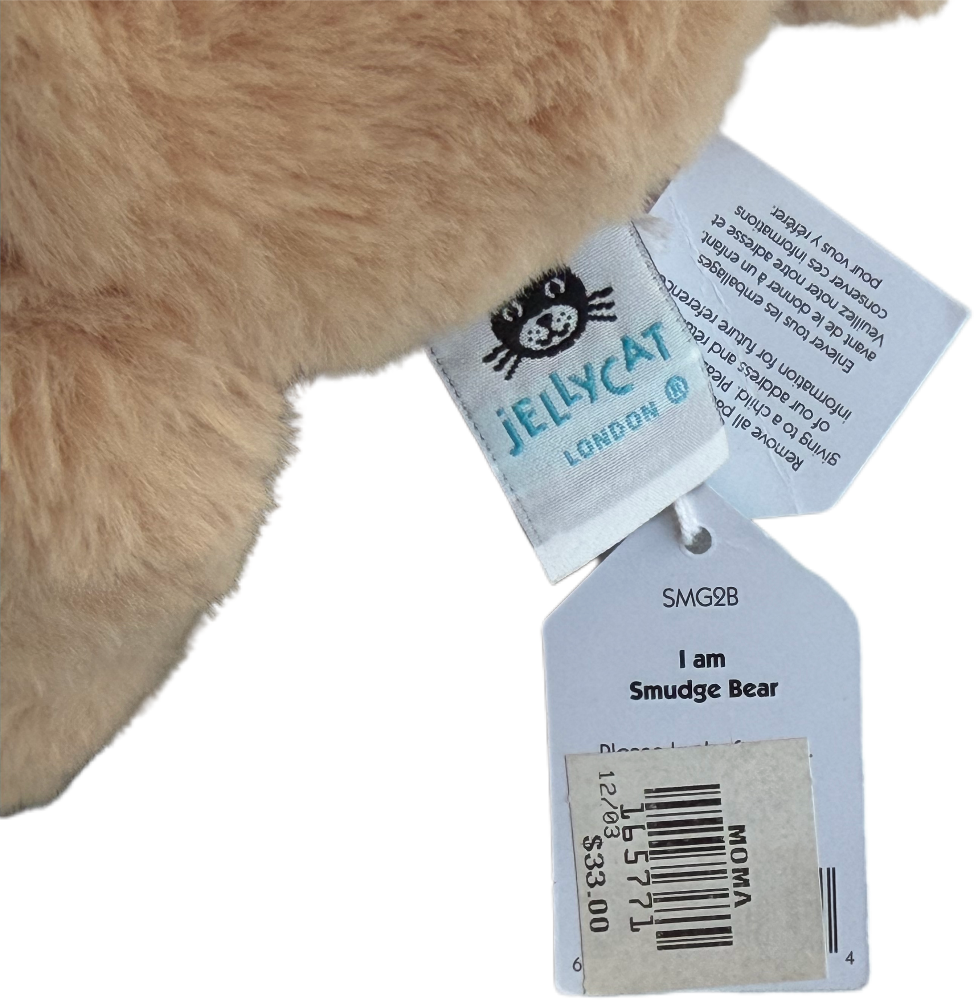

← Back to Collection 006
COLLECTION 006 / ITEM 01
Soft Bear Replica
- Material
- Polyester fabric, Soft filling
- Origin
- Indonesia
- Manufacturer
- Jellycat
- Model
- Smudge Bear
A fabric label attached to the object reads "I am a Smudge Bear",“Made in Indonesia” and “Suitable from Birth.” Historical records identify Jellycat as a company founded in London in 1999, specializing in soft toys. Based on the label and the object's soft texture, it was likely designed for infants or young children, possibly for play or tactile comfort.

